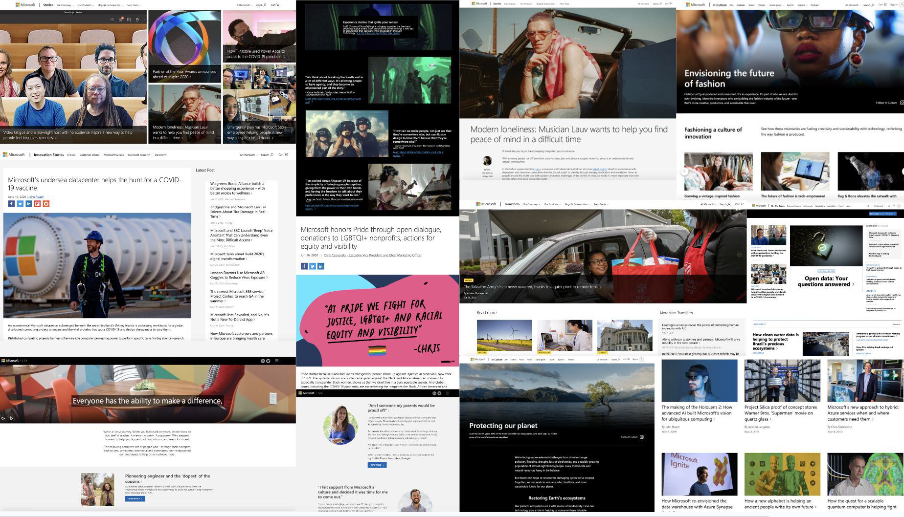
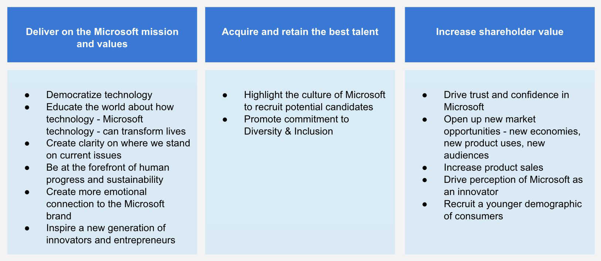
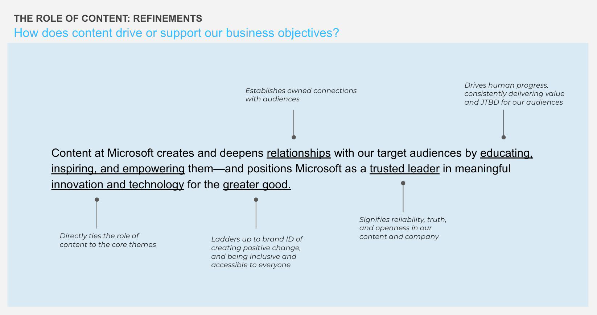
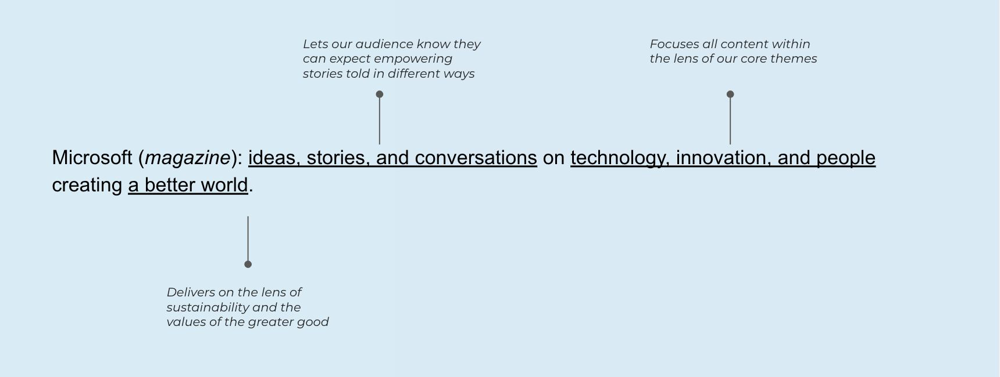
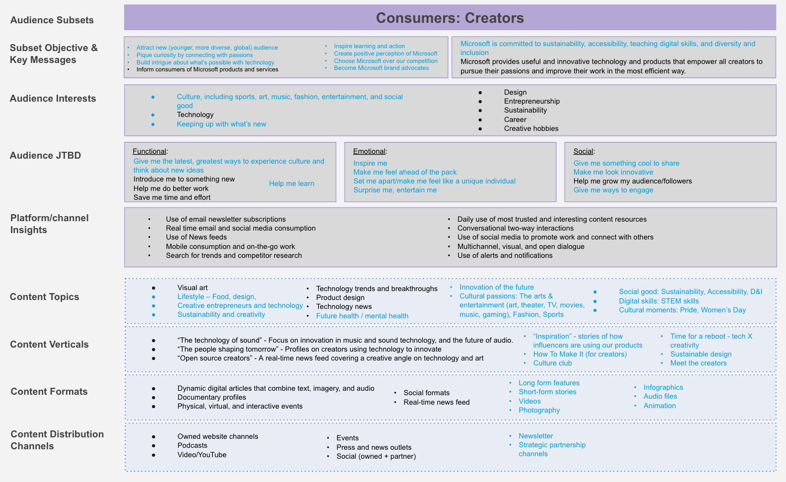
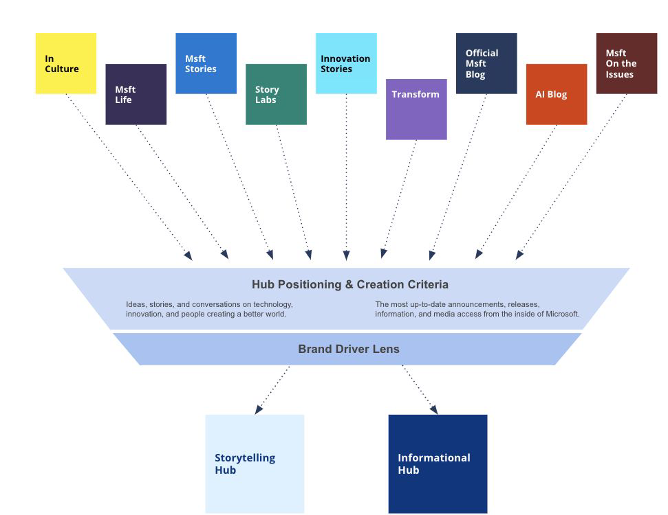
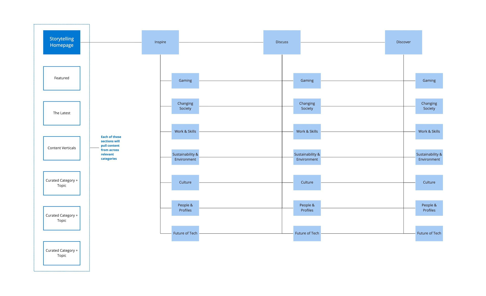

Consolidating 17 content sites into one connected ecosystem

Overview
Microsoft had 17 content sites serving more than 50 B2B and B2C audience subsets. They had grown organically over years, so the same stories were told in several places by teams who could not see each other's work.
Over seven months I worked with Microsoft's brand marketing, communications, and platform teams to define what content is for at Microsoft, then designed a single ecosystem to replace the sprawl: two primary outlets, a shared editorial approach, and the organizational structure and implementation plan to run them.
Where we started
Stories, Transform, In Culture, On the Issues, Innovation Stories, Life, and the product blogs all published against overlapping remits.
Consumers, creators, developers, IT decision makers, policy makers, and candidates were all being addressed, often by the same article.
Without a stated role for content, every team set its own objectives, which is what produced the duplication in the first place.
We began with a full assessment of the existing properties, mapping what each one published, who it spoke to, and where it overlapped with the others. That white-space analysis became the case for consolidation.
Defining the role of content
Strategy development started with a question nobody had answered in writing: what is content at Microsoft for? We tied it to three business objectives the whole company already shared, then wrote the editorial mission that follows from them.



Audiences, topics, and verticals
Fifty audience subsets cannot each have a site. In workshops with brand marketing, communications, and the platform owners, we grouped them into a workable set and built a profile for each one: what they care about, the jobs they are trying to do, the topics that serve them, and where they should be reached.

Those profiles fed the content funnel, the CRM content strategy, and the partnerships strategy, so that what got published had a stated audience and a next step rather than a slot on a calendar.
Two hubs instead of seventeen
We set positioning and creation criteria for each existing property, then ran them through a brand driver lens. Everything resolved into two outlets: a storytelling hub for narrative and culture, and an informational hub for news, announcements, and press material.


Alongside the structure we wrote naming criteria, a content migration recommendation, a social transition strategy, and a steering committee roadmap, so the consolidation had a sequence rather than a switch-flip date.
Visioning the hubs
Strategy documents do not move a company this size. We prototyped the hubs under working names so leadership could see the editorial approach, the verticals, and the search story as a real product.
Outcome
We handed Microsoft an implementation strategy built with their core team: the ecosystem, the editorial approach, the organizational structure, the migration sequence, and the roadmap to execute it.
Both hubs are live today, built on the two-outlet model: